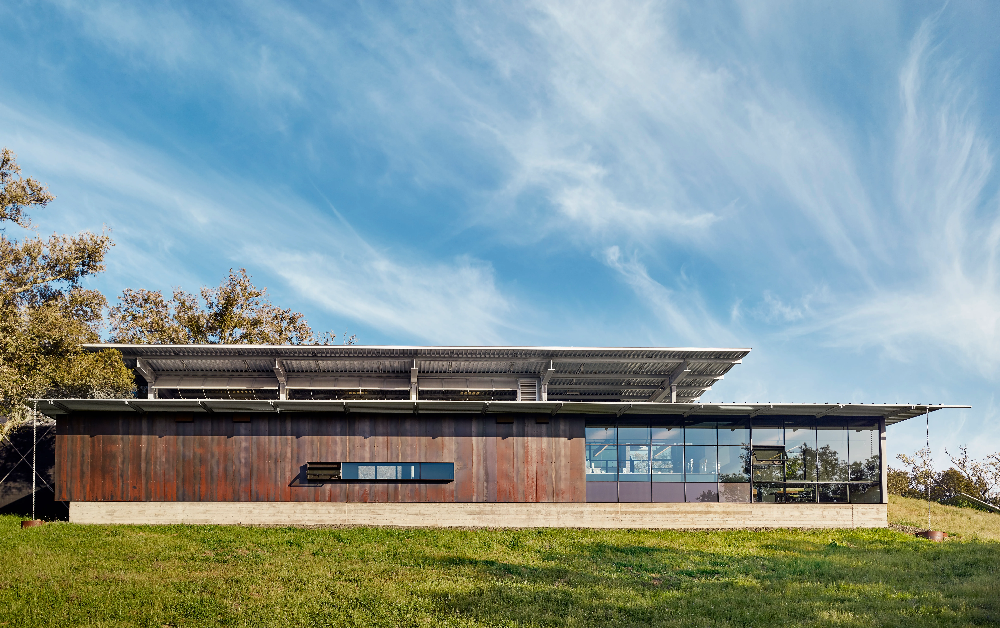

AT A HIGHER LEVEL
Our Story:
Waramaug Greens was founded in 2020 by Hugh Jesse, a software developer who lived and worked in the Netherlands for many years. When Covid hit, Jesse set out to find a new and exciting way to enjoy his time. From this, the Virtual Reality experience was born. Jesse took his programming skills to the next level, crafting intricate light shows, spacious gardens, and underwater escapes. However, this was only the beginning of the Waramaug story. Following the creation and distribution of these VR experiences, popularity quickly caught on and Jesse began his team. The goal - to deliver the highest quality experiences in a new and innovative way that hadn’t previously been seen on the market. Following COVID 19, the Waramaug family continued their mission - offering a variety of services to bring people together and enjoy premium sourced products in the best ways possible. By merging digital and physical space, something completely unique was gifted to the world.